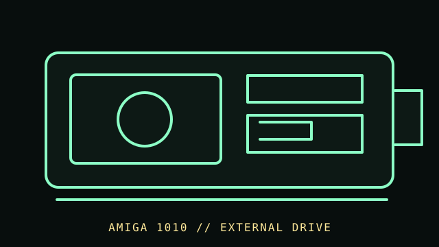

[ FLOPPY DRIVES // IDENTIFIED MODEL ]
Commodore Amiga 1010 External Disk Drive
The Amiga 1010 is a 3.5-inch external floppy drive for Amiga systems. Amiga drive signaling and disk formats are system-specific; this is not a generic PC external drive.

MODEL IDENTIFICATION: Commodore Amiga External Disk Drive Model 1010; record nameplate, hardware revision, cable, and any replacement mechanism or modification. Confirm the full designation, revision, interface and service-document edition. This record is not a general compatibility guarantee.
Recorded specifications
| Catalog model | Commodore Amiga 1010 External Disk Drive |
|---|---|
| Device type | External 3.5-inch Amiga floppy drive |
| Interface / connector | Amiga external floppy-drive interface and daisy-chain connection; verify the exact connector and host-specific cable from the 1010 manual. |
| Media / formats | 3.5-inch magnetic disk; AmigaDOS disk layout and format depend on Amiga system software and drive configuration. No cross-platform capacity claim is made. |
| Revision caution | Verify model suffix, label, board/firmware revision, cable and manual edition. Model-family similarity is not proof of pinout, BIOS support, interchangeability or format compatibility. |
Host and controller compatibility
- Use with the Amiga models and external-drive connection documented for the 1010. It is not a USB or PC 34-pin drive without a separately engineered interface.
- An added external drive can appear as a separate Amiga device; startup, daisy-chain position, and software support must be checked on the host system.
- The fitted mechanism may have been replaced over the product’s lifetime. Photograph and identify the installed mechanism instead of assuming it matches the enclosure label.
Safe preservation and cleaning
Disconnect host power and the drive cable before inspection. Do not insert moldy, warped, sticky, or shedding media. Follow Amiga 1010 service instructions for head cleaning; do not apply solvents to disks or move alignment adjustments without a documented procedure.
Photograph labels and connectors before service. Record the host, controller, settings, software, condition and source document. Keep original media or raw captures intact; verify checksums before making derivatives.
Manufacturer manuals & archival references
- Commodore Amiga 3.5 External Disk Drive Model 1010 User’s Manual — Internet ArchiveArchived model-specific owner manual.
- Amiga 1010 specifications — Internet ArchiveSupplementary model reference; confirm against the manual and nameplate.
- Library of Congress — Digital format sustainabilityInstitutional preservation planning reference, not a device service specification.
Archived manuals may apply to a particular revision or family. The complete model/revision-specific manufacturer manual takes precedence. Capacities and recording modes are omitted where they cannot be tied to the cited model and format.